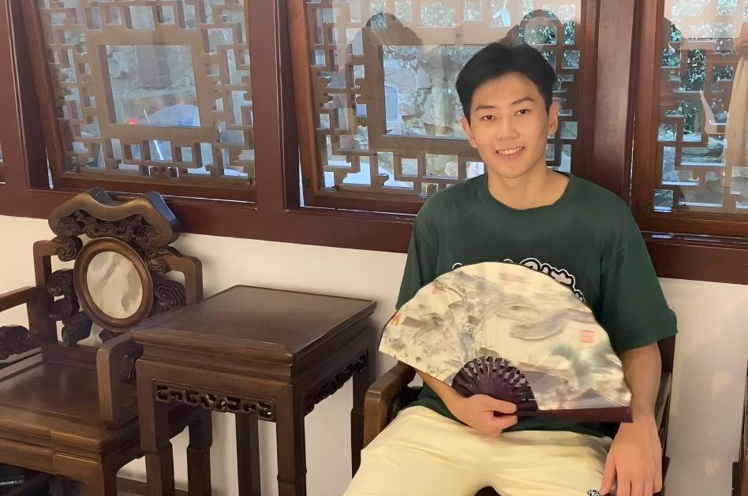

|
Shenzhi Yang
I am a first-year Ph.D. student at Zhejiang University, advised by Prof. Haobo Wang.
Previously, I received my B.S. degree in Communication Engineering from Zhejiang University of Technology and my M.S. degree in Software Engineering from Soochow University, where I was fortunate to be advised by Prof. Xiaofang Zhang.
If you are interested in connecting with me, please feel free to reach out.
Email: yangshenzhi [at] zju.edu.cn
Google Scholar /
Github
|

|
|
Research
I am broadly interested in various research topics, including out-of-distribution detection, semi-supervised learning, reinforcement learning, and large language models.
My current work primarily focuses on the robust training of LLMs/MLLMs via reinforcement learning in data-efficient and noisy annotation settings, aiming to enhance their capabilities and reliability.
|
|
Selected Publications
|
Harnessing Feature Resonance under Arbitrary Target Alignment for Out-of-Distribution Node Detection
Shenzhi Yang, Junbo Zhao, Sharon Li, Shouqing Yang, Dingyu Yang, Xiaofang Zhang, Haobo Wang
arXiv preprint arXiv:2502.16076 (NeurIPS'25).
|
HGACLLM: Attribute Completion in Heterogeneous Graph with Integration of External Knowledge from Large Language Models
Zongxing Zhao, Shenzhi Yang, Xingkai Yao, Yuying Wang, Zhongqiu Chen, Xiaofang Zhang
https://dl.acm.org/doi/abs/10.1145/3746027.3755800 (MM'25)
|
Bounded and Uniform Energy-based Out-of-distribution Detection for Graphs
Shenzhi Yang, Bin Liang, An Liu, Lin Gui, Xingkai Yao, Xiaofang Zhang
arXiv preprint arXiv:2504.13429. (ICML'24)
|
|
Services
Reviewer for ICLR 2026, WWW 2024, TKDD, Neural Networks.
|
|
Awards
2025: Outstanding Graduate of Soochow University
2025: National Scholarship for Postgraduate Students
2021: Zhejiang Provincial Government Scholarship
2020: Zhejiang Provincial Government Scholarship
|
|
Experience
Research Intern in Ant Group, Hangzhou, China (May 2025 - Now)
Visiting Student at Westlake University, Hangzhou, China (Aug 2024 – Oct 2024)
|
|
{kind=link}